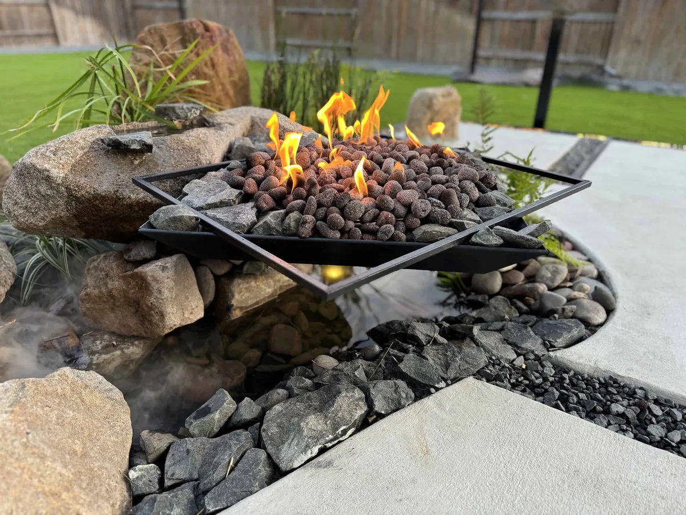
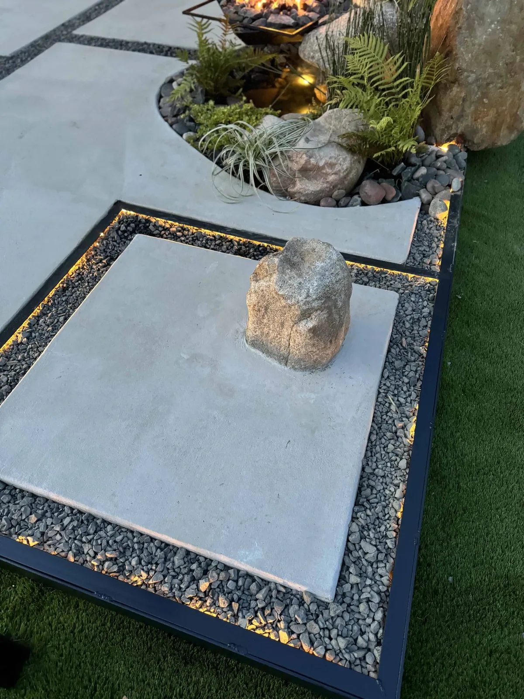
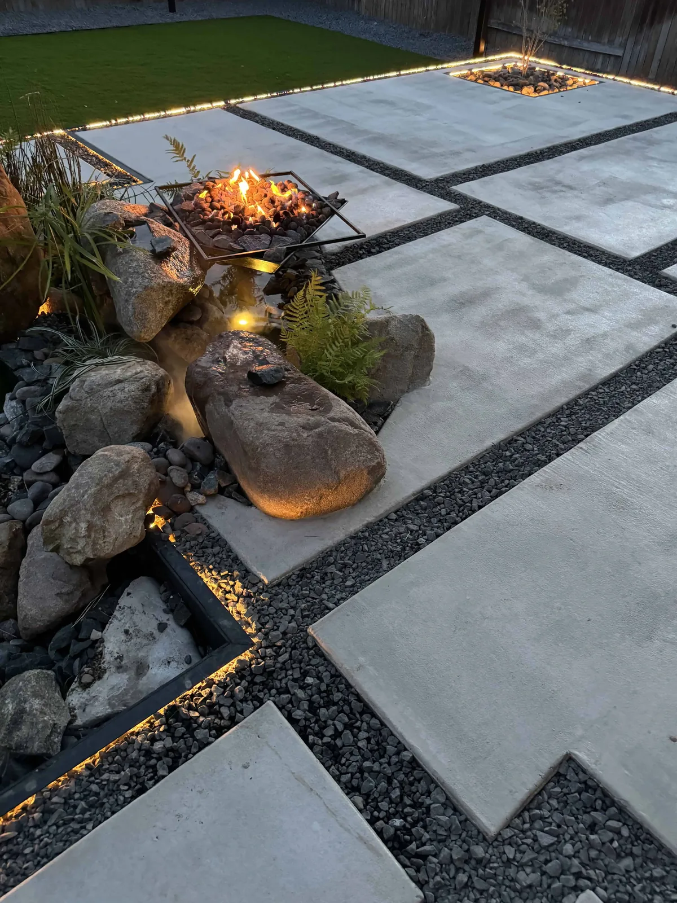

Pflugerville sits on the Blackland Prairie east of I-35. The soil is expansive clay: it swells when wet, shrinks and cracks when dry, holds water at the surface, and heaves anything set on it without a proper base. It is also alkaline, which rules out acid-loving plants.
Pflugerville runs its own water utility, supplied in part from Lake Pflugerville. In drought stages the city has restricted lawn watering to one day a week by address, with no weekend watering. A native landscape with no permanent irrigation is unaffected by any stage.
Flat ground on slow-draining clay means standing water after a storm. The project below re-graded the entire lot for surface drainage before a single plant went in, because on this soil grading is the first plant decision.
Agaves and most Texas natives die in wet clay, not from drought. So a Pflugerville xeriscape starts with the ground, not the plant list. We cut the dead turf, re-grade the lot so surface water runs to the street or a drain, and build planting beds up as mounds of amended, gravel-rich soil sitting above the clay. Our landscape drainage guide covers the grading, and the alkaline soil guide covers what the clay does to plant chemistry.
Decomposed granite paths do double duty: they are the walking surface and they are drainage, letting water through where a slab would shed it. 1/4-inch mild steel edging holds the line between the mounded beds and the paths so the two never blur. Then the plants go in, chosen from the xeriscape service palette for clay tolerance and heat.
The last step is to leave the irrigation out. With grading and mounding done right, the Pflugerville project below runs on rainfall alone. Our how to xeriscape in Austin guide walks through the whole sequence.
A Pflugerville yard of dead turf on flat clay that held water after every rain. Red Agave removed 2,800 square feet of turf, re-graded the full lot for surface drainage, and planted a 14-species native Texas palette including Whale's Tongue, Blue Glow, and Artichoke agave on mounded beds. 340 linear feet of 1/4-inch mild steel edging separate the beds from 18 tons of decomposed granite pathway. Hand-set limestone boulders anchor the composition, and 12 COB uplights on an ESP32 WLED controller light it at night. No permanent irrigation was installed.



On mounded, gravel-amended beds the agaves lead: Whale's Tongue, Blue Glow, Artichoke, and the big Agave salmiana 'Green Giant'. Our cold-hardy agave guide covers which ones also take a Blackland winter.
Around them go the clay-tolerant natives that handle alkaline soil and full sun: Gulf muhly, Lindheimer muhly, Texas sage, flame acanthus, and softleaf yucca, with blackfoot daisy and pink fairy duster on the best-drained crowns of the mounds. All are on our native plants guide and summer survivors list.
Tell us about your Pflugerville yard and where the water sits after a storm. We'll start with the grading.
Get a Free Quote →